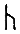

(yaklaşık 673-735)
Bede, 1899 yılında aziz ilan edildi ve "Kutsal" unvanını aldı. Ancak kutsallık ününü neredeyse bin yıl kadar önce pekiştirmişti. 1020 yılında yaşamının çoğunu geçirdiği Northumberland'daki Jarrow manastırındaki iskeleti buradan kaçırılarak Durham katedraline, Aziz Cuthbert'in mezarının yanına yerleştirildi. Görünüşe bakılırsa Durham, İngiliz mezar kalıntıları konusunda öne geçmeye kararlıydı. Fakat on dokuzuncu yüzyıla gelindiğinde, istisnai nitelikteki iyi bir kimse olduğuna ilişkin tüm gerekli kanıtların varlığına karşın, kendisini dine adamış bir keşiş olarak değil de "İngiliz Tarihinin Babası" olarak tanınıyordu.
Bede'in 731 yılında tamamlanan History of the English Church and People (İngiliz Kiliseleri ve İnsanlarının Tarihi) adlı eseri, Hristiyanlığın Britanya'ya yerleşmesini ve Britanya adalarında Bede'in sık sık "kalleş kabileler" ya da "dinsiz halk" biçiminde aşağıladığı insanlar arasında karşılaştığı zorlukları ele alır. Britanya halkı o kadar dik kafalıydı ki, Tanrı onları cezalandırmanın uygun olacağına karar verdi, hatta onları korkutmak için Arabistan'da, Muhammed adında yeni bir felaket yarattı. Bede'in beş kitabı, Anglo-Saxon dönemini inceleyenler açısından eşsiz bir kaynaktır. Bede, dine bağlılığında olduğu kadar araştırmalarında da titiz davranmıştır.
Bede sayesinde adsızlığın sisleri aralanır ve eserleri yok olmuş ozanların hüzünlü yoklaması sona erer. Yarı mitsel Widsith'le karşılaştıktan ve Beowulf'u kimin yazmış olabileceği konusunda tahminlerde bulunduktan sonra, nihayet gerçek bir adla karşılaşırız. 4. kitabın 24. bölümünde adıyla tanınan ve şiirleri bugüne kadar kalan ilk İngiliz şairi Cædmon ile tanışırız. 680 yılında Cædmon, kendi yaşıtlarının sahip olduğu şarkı söyleme yeteneğinden yoksun, yaşı ilerlemiş bir çobandı; ta ki günün birinde gördüğü bir düşte şarkı söylemeye davet edilene kadar. Cædmon buna itiraz ederek beceriksiz olduğunu bildiği için şöleni terk ettiğini söyledi, ama görüntü ısrarda diretti. Cædmon yeniden reddetti ve bu kez de zaten şarkı söyleyecek hiçbir konusu olmadığını söyledi. "Her şeyin Yaradılış'ından bahset" denildi. Cædmon şarkısını söyledi:
Şimdi cennet krallığının koruyucusuna şükranlarımızı ifade edelim, Efendimizin kudretine ve erdemine, İsa'nın babasının eserine. O, İlahi Efendi, her bir mucizenin başlangıcını buyurdu. O, Kutsal Yaratıcı, önce insanların oğulları için çatı olsun diye gökyüzünü oluşturdu; ardından insanlığın koruyucusu, aşağıda orta dünyayı, insanların dünyasını yarattı, sonsuza dek Efendimiz, kudretli Liderimiz.
Bede, şiirin yalnızca "genel anlam"ını Latince verir ve şiir ihtişamından ve gücünden bir şeyler yitirmeden çevrilemeyeceği için de özür diler. Fakat adını bilmediğimiz başka biri de eserin sayfa kenarına Cædmon'un kullandığı sözcükleri iliştirmeyi uygun gördü:
Nu scylan hergan hefaenricaes uard,
metudæs mecti end his modgidanc,
uerc uuldurfadur sue he uundra gihuaes,
eci dryctin, or astelidæ,
He aerist scop aelda barnum
heben til hrofe, haleg scepen;
tha middungeard moncynnæs uard
eci dryctin aæfter tiadæ
fir um foldu, frea allmectig.
Cædmon bununla da yetinmeyerek bir sürü şiir yazdı. Bunlar arasında Bede'ye göre şunlar yer alıyordu:
Yaradılış öyküsü ... İsrail halkının Mısır'dan göçü ve vaat edilmiş topraklara girişi; kutsal kitaplarda yer alan daha birçok tarihsel olay. İsa'nın doğumu, çektiği acılar, ölümü, yeniden dirilişi ve cennete yükselişi, Kutsal Ruh'un gelişi, havarileri öğretileri üzerine şiirler yazıp söyledi. Ayrıca yargı gününün korkuları, cehennemin dehşetli ıstırapları ve cennet krallığının zevkleri konularında da şiirler yazdı.
Cædmon öğrendiklerini, kısa bir düşünme süresinin ardından ânında şiire dönüştürebiliyordu; "tıpkı geviş getiren hayvanlardan biri gibi."
Cædmon, İncil'in Latince'sini Anglo-Saxon şiirine aktarırken bir parça çeviri yapmak zorunda kalmış olabilir. Adı Anglo-Saxon ya da Cermen kökenli bir ada benzemez; belki de "bilinen ilk İngiliz şairi" kendi anadilinde değil de ikinci dilinde şiirler yazıyordu. Çok sonraları Anglo-Saxon bilginler, dikkatlerini Junius, Vercelli ve Exeter'in el yazmalarına yönelttiklerinde, Yaradılış, Göç, İsa I (Cennete Yükselen İsa) adlı şiirleri ve havarilerin kaderini konu alan şiirlerin Bede'in Cædmon'a atfettiği şiirler olduğunu varsaymaları çok doğaldı. Fakat günümüzde kesinlikle ona ait olabileceğini söyleyebileceğimiz yalnızca dokuz mısra var. Lehçe ve tarihe ilişkin tartışmaları yeniden açmaya gerek göstermeksizin inkâr edilemez tek bir kanıt, bu eserlerden ikisinin Cædmon'a ait olmadığını açıkça göstermektedir: mısraların altında başka bir yazarın imzası durmaktadır.
Cynewulf, Cædmon'dan yaklaşık bir yüzyıl sonra yaşadı. Onun imzasını taşıyan dört tane Anglo-Saxon şiiri günümüze kadar gelebildi. İmzalar daima onun adını oluşturan harflerden oluşmaktadır ve bu harflerin yazısal niteliği de her bir şiirde aynıdır. Yukarıda sıralanan eserlerin yanı sıra Elene ile Andreas da yazarın kimliğini belirtmek için eklediği bu apayrı, bulmaca niteliğindeki bölümlere sahiptir. Bu eklemeler: cen  (meşale), yr (yay/borazan), nyd (gereklilik), eoh (at), wynn (mutluluk), ur (öküz/bizim/kudret), lagu (okyanus) ve feoh (varsıllık). Cynewulf, Elene'ye eklediği biyografik sonda, kendisinin İsa tarafından günahlarından arındırılmadan önce aşırı hiddetli biri olduğunu anlatır.
Sözcüklerle, harflerle ve adını oluşturan harflerle oynadığı düşünüldüğünde, bu şiirleri Cædmon'un yazdığı varsayımını bir kenara bırakıp şiirlerin tümünü Cynewulf hanesine yazmak, atılması gereken bir sonraki adım gibi görünebilir. Fakat yalnızca dört şiir şairin adını dolaylı biçimde içermektedir ve aslında bunlar bile parşömen üzerine şairin kendisi tarafından kaydedilmemiş olabilir. İsa I ile İsa III üzerinde, şairin yeteneği bir yana bu işaretler eksiktir. Cynewulf'u koca bir geleneğin ardındaki elle tutulabilir deha haline getirme arzusu anlaşılabilir olsa da, bugün kesin bildiğimiz tek bir şey varsa, o da Cynewulf'un yalnızca dört şiirin yazarı olduğudur.
Önce Cædmon'a yanlışlıkla Cynewulf'un eserlerinin tümü atfedildi; ardından Cynewulf'un Anglo-Saxon baş ozan sıfatıyla Cædmon'un yerine geçtiği düşünüldü, fakat ne söz konusu yanlış atfetme ne de tahtından edilmesi, Cædmon'un ününden pek fazla bir şey götürmedi. Fakat onun selefi olacak birileri bunu başarabilir ve bunun için de iki aday boy göstermekte: Drycthelm ile Aldhelm.
Drycthelm hakkında tek bilinen şey, Bede'in History'sinde anlatılan yeniden ortaya çıkışı. Northumberland'da dini bütün bir ailenin reisi olan Drycthelm öldü, ama görünüşe göre üç gün sonra yeniden yaşama döndü. Geçici ölümü esnasında gözlerinin önünde cennet ve cehennemin görüntüsü belirdi, bu yüzden de Melrose'da keşiş olmaya karar verdi. Yaşam sonrası hakkında çok az şey anlatmayı tercih ediyordu. Haemgils adında bir keşiş onun anlattıklarını, Dante ile Milton'un anlattıklarına benzer bir biçimde biraraya getirip kâğıda döktü, fakat Drycthelm bir ozan olarak kazanabileceği geçici şöhretten ziyade kendi ölümsüz ruhunun nitelikleriyle ilgileniyordu. Bedenine acı çektirip onu eğitmek için sık sık buz gibi suya girer ve ilahiler söylerdi. Diğer keşişler dayanıklılığı karşısında hayretlerini dile getirince de kısaca şu yanıtı veriyordu: "Ben daha soğuğunu da gördüm"
Aldhelm çok daha ünlüydü. Malmesbury Başrahibi ve Sherbourne Piskoposu olan Aldhelm, bekâret üzerinde Latince bir övgü kaleme aldı. Bede'ye göre bu eser "Sedulius'u model alan, altılı şiir ölçütünün çifte biçiminde oluşturulmuş, düzyazı da içeren" bir çalışmaydı. Aynı zamanda da 100 bilmece ile örneklenmiş, koşukbilim üzerine bir denemeydi. Kral Alfred, Aldhelm'in İngilizce şiirlerinin en çok sevdiği eserler olduğunu belirtiyordu, ancak bu şiirlerden hiçbiri günümüze ulaşamadı. Gesta Pontificum, Aldhelm'in cemaatinin vaazlardan hoşlanmamaya başlaması üzerinde şiir yazmaya başladığına ilişkin sevimli bir öykü içerir. Başrahip Aldhelm, kilisenin dışına çıkıp bir halk ozanı kılığında şarkılarını söylemekte, kutsal kitaptan sözleri diğer eğlendirici malzeme arasına katıştırmaktadır. Drycthelm ile Aldhelm aslında Cædmon öncesinde Hristiyanlık'ta yerli nitelikli bir yaratıcılık geleneğinin var olduğunu göstermektedir. Malmesbury'li William, Aldhelm'in eserlerinin on ikinci yüzyılda hâlâ dilden dile dolaştığını ileri sürse de, her iki İngiliz yazarın da eserleri yirmi birinci yüzyıla ulaşamadı.
Bede'nin kendisi yalnızca tarihçi olmakla kalmıyordu. Öldüğü sıralarda Aziz John'un İncil'ini Anglo-Saxon diline çevirmekle uğraşıyordu. Bu çeviri History'yi içeren bibliyografik eserlerine eşlik edecekti. The Building of the Temple (Tapınağın Yapımı), Thirty Questions on the Book of Kings (Kralların Kitabı Üzerine Otuz Soru), On the Book of the Blessed Father Job (Kutsal Tanrı'nın İş Kitabı Üzerine) adlı kitaplarının ve elli altı adet diğer çeşitli din eserlerinin yanı sıra, Book of Hymns (İlahiler Kitabı), Book of Epigrams (Nükteli Sözler Kitabı), On the Nature of Things (Nesnelerin Doğası Üzerine), On Orthography (Yazım Üzerine), On Times (Zaman Üzerine) ve Art of Poetry (Şiir Sanatı) adlı kitapları da kaleme aldı. Bunların hepsi bugün kayıp.
En son kitap (Art of Poetry{89}) Bede'in aynı zamanda bir şiir kuramcısı olduğunu gösterir. Aynı zamanda uygulamacıydı da. Bede'nin öğrencilerinden olup sonradan Jarrow Başrahipliğine getirilen Cuthbert bir mektubunda, okul arkadaşı Cuthwin'e Bede'in son günlerini anlatır. Ölüm döşeğinde Bede bir şiir yazmıştır: "Kaderinde yazan yolculuğa çıkmadan önce hiçbir insan, ruhu bedeninden ayrılmadan önce hangi iyilik ve kötülükleri yaptığını, ölüm gününden sonra nasıl bir yargılamayla karşılaşacağını düşünmeden edemez." Cædmon'un şiirleri gibi Bede'in İngilizce şiiri de yalnızca Latince bir metne ek olarak korunabildi.